SDG 3건강과 웰빙
측정소가 없어 노출을 말할 수 없던 공간에도 시간별 농도가 생긴다. 노출평가의 대상이 측정망 밖으로 넓어진다.
쓰임 — 건강 위해를 판단할 근거를 관측 공백지까지 넓힌다.
High-Resolution Air Pollution Inference for Observation-Sparse Areas
Using Public Data and AI:
An SDGs and TWI2050 Perspective
UN (2015) 2030 의제의 핵심 원칙 LNOB.
대기환경 관측 공백은 단순한 자료
부족이 아니라 환경정보 접근성의 격차이다.
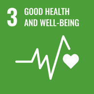
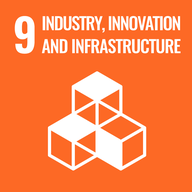
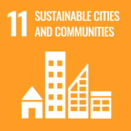
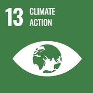
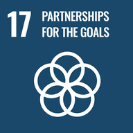
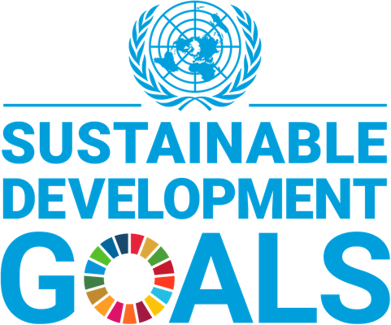
누구도 소외되지 않는다
Leave No One Behind (LNOB)
전지구 화학수송모델은 동아시아의 대기 현상을 잘 표현한다. 그러나 해상도가 수십 킬로미터여서, 서울 도심과 경기 외곽의 전원 지역을 같은 값 하나로 덮는다.
그 차이를 가려내려는 것이 고해상도 대기질 연구이고, 최근에는 인공지능으로 1km 농도장을 추론한다.

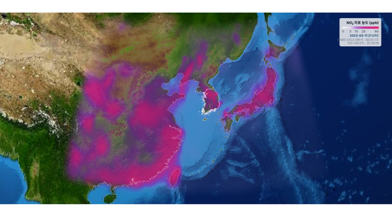

 아시아
아프리카
아시아
아프리카
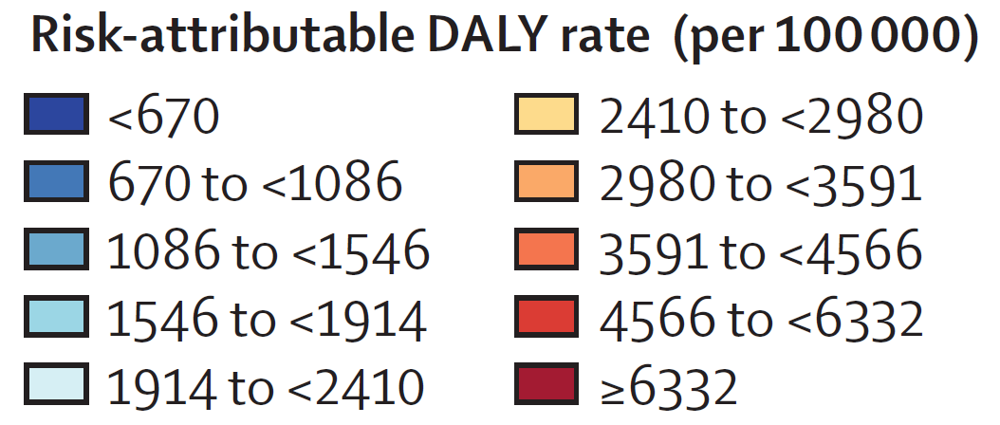
대기오염에 기인한 질병부담 — 인구 10만 명당 위해요인 기여 DALY(장애보정 생존년수)율, 2021년. 붉을수록 부담이 크다. 출처 — GBD 2021 Risk Factors Collaborators, The Lancet 403, 2162–2203 (2024)
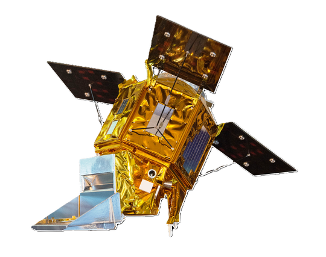
TROPOMI저궤도 · 하루 한 번 13:30 무렵 GEMS정지궤도 환경위성 · 자외선·가시광 분광계
GEMS정지궤도 환경위성 · 자외선·가시광 분광계이곳에는 측정소가 없습니다.
그렇다면 이 지점의 농도는 얼마일까요?
측정소 사이를 거리로 보간하면 될까?
Local structure.
지형 · 토지피복 · 배출.
Regional context ≠
Local concentration.
광역 대기질과 바람은 넓은 지역의 맥락이다 — 이 1 km 지점의 지상 농도는 아니다.
Column observation ≠
Surface concentration.
위성은 대기 기둥 전체를 본다 — 지상 1 km 농도와 다른 물리량이다.
각각 유용하지만, 어느 하나도
빈 1 km 격자의 정답은 아니다.
하지만 이 정보들은
서로 관계가 있다.
여러 공간정보 →
고해상도 1 km 농도장.
G : {observations, spatial fields,
context} → c(x, y, t)
공간정보를 농도장으로 바꾸는 변환 규칙을 학습한다.
투영도 해상도도 형식도 제각각인 공개 자료를 공통 격자로 정합해,
누구나 쓸 수 있는 입력으로 만든다.
값비싼 관측도, 자체 화학수송모델도 필요하지 않다.
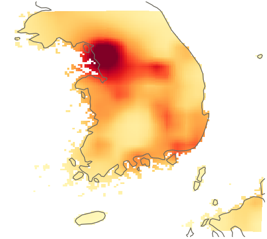
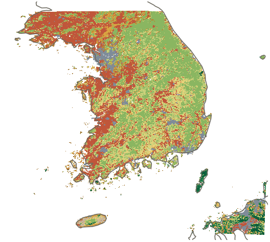

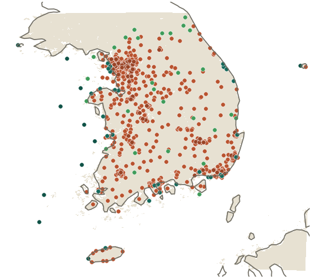

서로 다른 오류 구조의 증거가 같은 방향을 가리킬 때 타당성을 말한다 — 귀납의 통합 consilience of inductions

AI 추론장의 산화제 분배비 r = NO₂/Ox · (a) 연속 (b) 3구간
서울 도심에서 높고 외곽으로 갈수록 낮아진다

독립 관측인 위성 FNR · (a) GEMS (b) TROPOMI
두 위성 모두 도심에서 낮고 강원 산림으로 갈수록 높아진다
AMR-HGN — Adaptive Multi-Resolution Heterogeneous Graph Network
적응형 다중 해상도 이종 그래프 신경망
전통적인 이론 기반 물리모델이 각자 자연을 보는 관점으로 설계되었듯,
데이터 기반 인공지능 모델 또한 대기를 바라보는 관점으로 설계할 수 있다.
AMR-HGN은 대기오염을 여러 규모의 중첩으로 보고, 희소·불균질한 측정망을 이종 그래프로 끌어안는다.
관점의 선택부터 검증까지 과학적으로 접근한다.


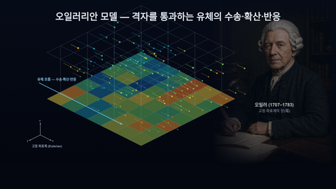
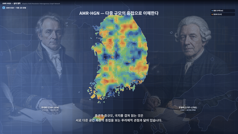


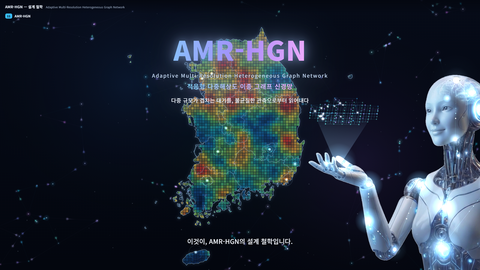
이 발표의 핵심은 세 가지입니다. 최첨단 인공지능 기술은 대기오염 관측 공백 지역의 데이터를 생산할 수 있고, 그 데이터는 SDGs에 기여할 수 있으며, 개방 데이터로 공유될 때 데이터 민주화에 기여합니다.
환경정보 접근의 격차를 줄이는 대기환경 데이터 생산의 노력이 누구도 소외되지 않는다(LNOB)는 원칙으로 이어집니다.
감사합니다
누구도
소외되지 않는다
Leave No One Behind
측정망 밖에 남겨진 공간에도 대기질 정보를 돌려주는 일. 그것이 이 연구가 국제 흐름 안에서 맡으려는 몫이다.